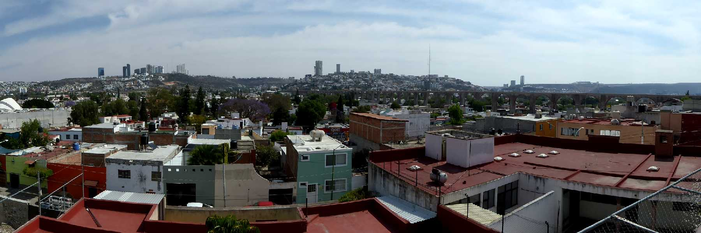
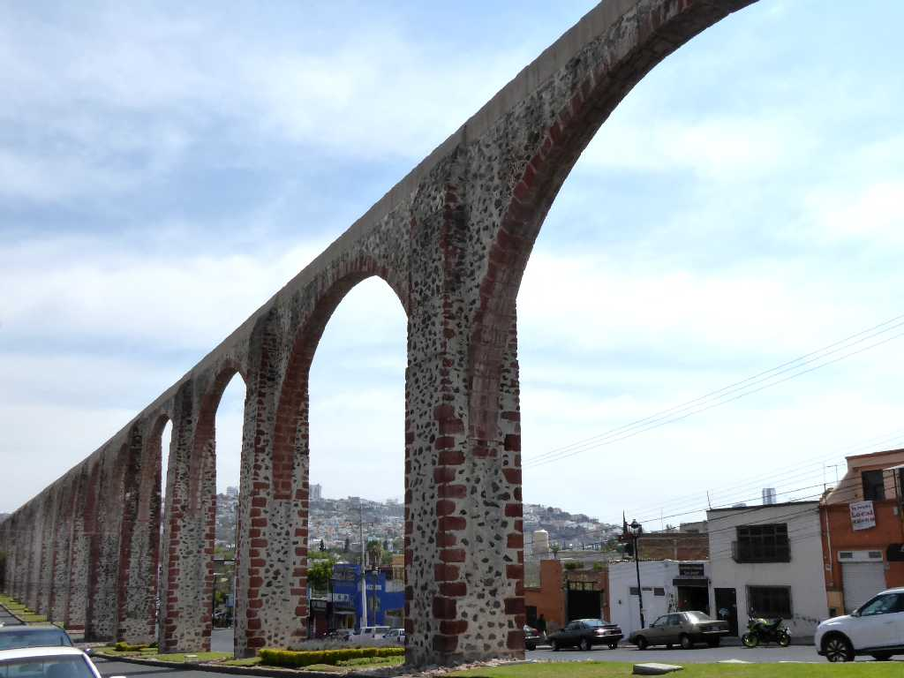
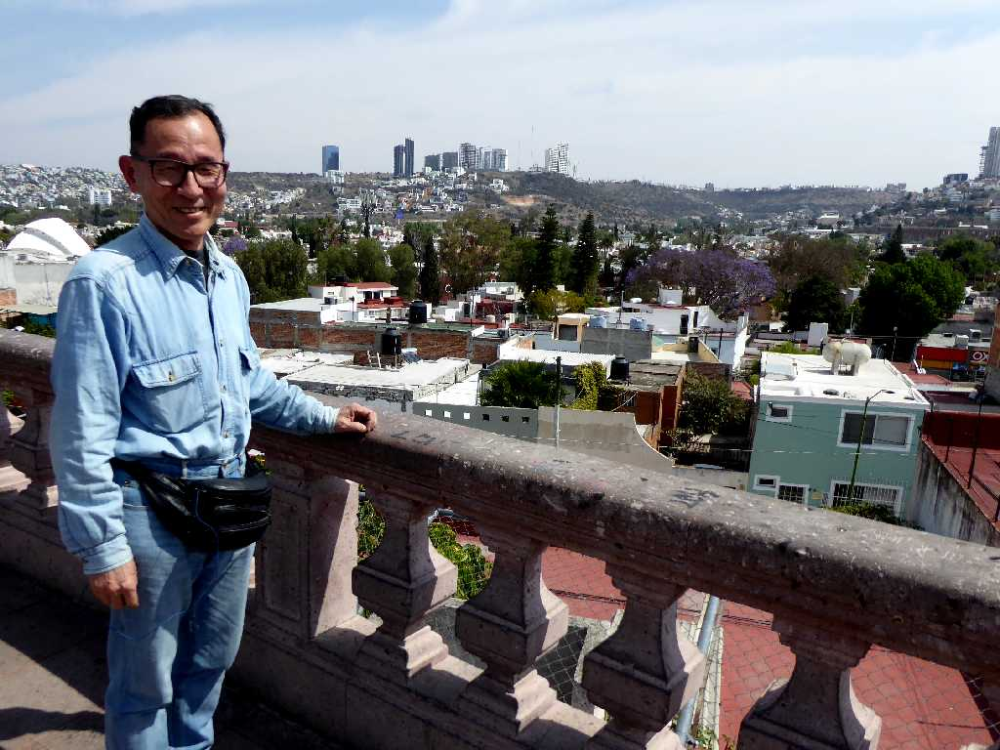
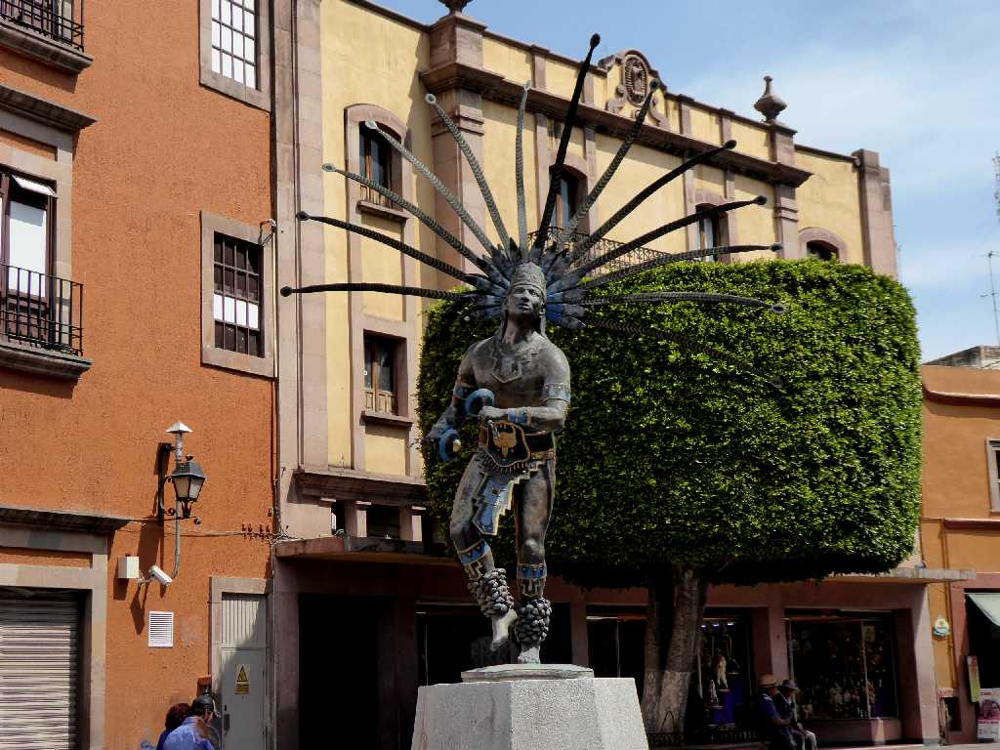

Mirador De los Arcos Querétaro
スペイン人により１５３１年に創られた街ケレタロは１７世紀から１８世紀に栄えた

Acueducto de Querétaro
１８世紀に創られた全長１,２８０ｍ７４のアーチからなるケレタロの水道橋

March 10 2020 Mirador De los Arcos Querétaro

Guerrero Chichimeca Querétaro
メキシコ北部の遊牧先住民族であるチチメカ族の戦士の像